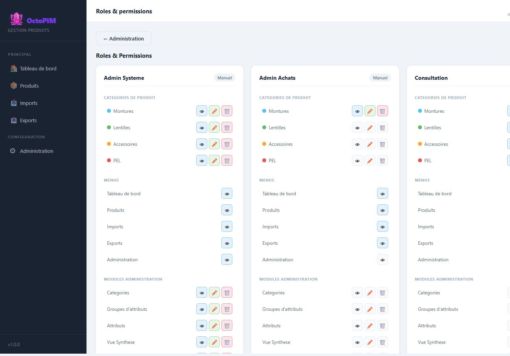

Roles et permissions
Un role est un panier de droits : menus visibles, categories accessibles, modules d’administration. Trois actions : lire, ecrire, supprimer.
Qu’est-ce qu’un role ?
Un profil metier (Admin Systeme, Admin Achats, Consultation, Users Achats…). En cible, le role est relie a un groupe Okta. Le mode peut etre Manuel (droits ajustes dans OctoPIM) ou Automatique (droits issus du mapping).

A quoi ça sert ?
- Limiter la saisie a certaines familles (ex. Achats ne voit que les Montures).
- Masquer Import, Administration, etc. selon le profil.
- Eviter qu’un lecteur puisse supprimer un produit ou un attribut.
Comment ça marche
| Maille | Exemples | Effet |
|---|---|---|
| Categorie | Montures, Lentilles… | Voir / modifier / supprimer les produits de la famille. |
| Menu | Tableau de bord, Produits, Imports, Exports, Administration | Afficher ou masquer l’entree de navigation. |
| Module admin | Attributs, Roles, Conditions… | Ouvrir la carte et editer le parametrage. |
Roles de la maquette (exemples, pas une liste figee) :
- Admin Systeme — tout, toutes categories.
- Admin Achats — catalogue Montures en ecriture, pas d’administration globale.
- Consultation — lecture sur toutes les familles, pas d’import ni d’admin.
- Users Achats — lecture Montures uniquement. Population Achats.
- Referencement — ecriture Montures. Population Referencement. Compte L. Petit.
En detail
Un role est un panier de droits : menus visibles, categories accessibles, modules d’administration. Trois actions : lire, ecrire, supprimer. Ecrire suppose lire. Les droits ne se posent pas sur la personne.
- Sans lecture sur une categorie, ses produits n’apparaissent nulle part : liste, dashboard, export.
- La completion suit le groupe utilisateur. Un role ne compte que les groupes d’attributs qui le citent, plus ceux qui ne citent personne. L’admin systeme compte tout.
- Droits d’origine, a ajuster. Admin Systeme : tout. Admin Achats montures : ecriture Montures, pas le menu Administration, lecture sur le reste du catalogue selon le reglage. Consultation : lecture, pas d’import ni d’administration. Users Achats montures : lecture Montures. Referencement : meme panier catalogue qu’Admin Achats. Compte d’exemple L. Petit.
- Une categorie nouvelle donne tout a l’admin systeme, la lecture a la consultation, et rien aux autres jusqu’a reglage.
- Si une action est impossible faute de droit, l’utilisateur contacte Alexis Beranger, administrateur de la solution. On ne contourne pas le droit.
- Cible l’authentification est Okta. Les noms de groupes Okta sont deja ceux des roles. La maquette change de compte localement.
Regles
RG-RBAC-01 — Sans lecture sur une categorie, ses produits n’apparaissent nulle part (liste, dashboard, export).
RG-RBAC-02 — Ecrire sans lire n’a pas de sens : la lecture est le socle.
RG-RBAC-03 — Cible Authentification Okta ; les noms de groupes sont deja poses sur les roles.
RG-RBAC-04 — La completion suit le groupe utilisateur : un role ne compte que les groupes d’attributs qui le citent, plus ceux qui ne citent personne. L’admin systeme compte tout.
RG-RBAC-05 — Droits d’origine, a ajuster ensuite. Admin Systeme : tout. Admin Achats : Montures en ecriture, pas les autres familles, pas le menu Administration, lecture sur les autres menus. Consultation : lecture de toutes les familles, pas d’import ni d’administration. Users Achats : lecture Montures seulement, pas d’import ni d’administration. Referencement : memes droits catalogue qu’Admin Achats. Compte d’exemple L. Petit.
RG-RBAC-06 — Une categorie nouvelle donne tout a l’admin systeme, la lecture a la consultation, et rien aux autres roles jusqu’a reglage.
RG-RBAC-02 — Ecrire sans lire n’a pas de sens : la lecture est le socle.
RG-RBAC-03 — Cible Authentification Okta ; les noms de groupes sont deja poses sur les roles.
RG-RBAC-04 — La completion suit le groupe utilisateur : un role ne compte que les groupes d’attributs qui le citent, plus ceux qui ne citent personne. L’admin systeme compte tout.
RG-RBAC-05 — Droits d’origine, a ajuster ensuite. Admin Systeme : tout. Admin Achats : Montures en ecriture, pas les autres familles, pas le menu Administration, lecture sur les autres menus. Consultation : lecture de toutes les familles, pas d’import ni d’administration. Users Achats : lecture Montures seulement, pas d’import ni d’administration. Referencement : memes droits catalogue qu’Admin Achats. Compte d’exemple L. Petit.
RG-RBAC-06 — Une categorie nouvelle donne tout a l’admin systeme, la lecture a la consultation, et rien aux autres roles jusqu’a reglage.